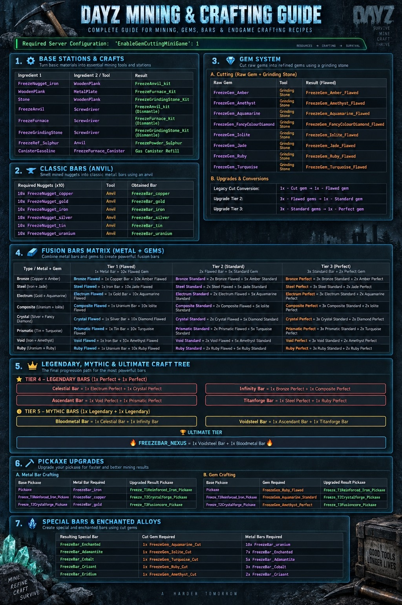

00
新手先看：完整採礦到覺醒流程
先把金屬線與寶石線分開理解，兩條線會在融合礦錠合流。
操作順序： 先確認你獲得的是「原礦石／礦粒／金屬錠／未加工寶石」，不要把四種不同加工階段混在一起。
01
工具、工作站製作與拆除
依你附的作者合成示意圖整理；作者圖只標示材料種類，未註明數量的配方不臆測數量。


熔煉爐
熔煉一般金屬原礦，取得對應礦粒。
Stone + WoodenPlank → FreezeFurnace_Kit
- 備齊遊戲中實際顯示的材料數量，合成工作站套件。
- 放置或架設後，依互動提示使用。
- 操作時以工作站可用配方及提示為準。


研磨石
處理未加工寶石，之後以同種類、同品質的寶石升階。
Stone + WoodenPlank → FreezeGrindingStone_Kit
- 備齊遊戲中實際顯示的材料數量，合成工作站套件。
- 放置或架設後，依互動提示使用。
- 操作時以工作站可用配方及提示為準。


鐵砧
將同類礦粒 ×10 製成金屬錠，並進行融合礦錠等鍛造。
FreezeNugget_iron + WoodenPlank → FreezeAnvil_kit
- 備齊遊戲中實際顯示的材料數量，合成工作站套件。
- 放置或架設後，依互動提示使用。
- 操作時以工作站可用配方及提示為準。
工作站／加工完整速查
| 材料／工作站 | 搭配物品／工具 | 結果與用途 |
|---|---|---|
 鐵礦粒FreezeNugget_iron 鐵礦粒FreezeNugget_iron | 木板（WoodenPlank） | 鐵砧套件（FreezeAnvil_kit） |
| 石頭（Stone） | 木板（WoodenPlank） | 熔煉爐套件（FreezeFurnace_Kit） |
| 石頭（Stone） | 木板（WoodenPlank） | 研磨石套件（FreezeGrindingStone_Kit） |
| 鐵砧 | 螺絲起子（Screwdriver） | 拆除，取回鐵砧套件 |
| 熔煉爐 | 螺絲起子（Screwdriver） | 拆除，取回熔煉爐套件 |
| 研磨石 | 螺絲起子（Screwdriver） | 拆除，取回研磨石套件 |
 精煉硫磺FreezeRef_Sulphur 精煉硫磺FreezeRef_Sulphur | 鐵砧（Anvil） |  硫磺粉FreezePowder_Sulphur 硫磺粉FreezePowder_Sulphur |
| 汽油桶（CanisterGasoline） | 熔煉爐燃料罐（FreezeFurnace_Canister） | 燃料罐補充 |
材料數量說明： 作者圖片列出工作站合成的材料組合，但沒有標註各素材的確切數量；舊網站曾寫「金屬板 ×5＋木板 ×5」等內容，與這張作者圖不一致，已避免把舊數量當作已驗證配方。
採礦工具與零件
 T1 強化鐵鎬
T1 強化鐵鎬基礎十字鎬升級後的第一階。初始可使用一般 Pickaxe 採礦。
 T2 水晶鍛造鎬
T2 水晶鍛造鎬十字鎬中階鍛造成品。
 T3 融合核心鎬
T3 融合核心鎬十字鎬高階鍛造成品。
鍛造錘鐵砧的鍛造輔助工具。
 鍛造鉗
鍛造鉗鐵砧的鍛造輔助工具。
丙烷氣瓶熔煉設備可能需要的燃料設備。
 丙烷連接管
丙烷連接管熔煉設備相關部件。
研磨輪研磨設備的相關部件。
02
礦脈在哪裡？如何採集與獲得材料
帶十字鎬靠近可互動的礦脈，照遊戲顯示的採集動作取得資源。實際地圖生成位置與掉落比率以伺服器設定為準。
原礦礦脈｜依你給的遊戲截圖
 銅礦石礦脈可互動礦脈示例
銅礦石礦脈可互動礦脈示例 硫磺礦石礦脈特殊硫磺材料
硫磺礦石礦脈特殊硫磺材料 黃金礦石礦脈一般金屬礦脈
黃金礦石礦脈一般金屬礦脈 錫礦石礦脈一般金屬礦脈
錫礦石礦脈一般金屬礦脈 銀礦石礦脈一般金屬礦脈
銀礦石礦脈一般金屬礦脈 鐵礦石礦脈一般金屬礦脈
鐵礦石礦脈一般金屬礦脈 石材礦脈石材採集
石材礦脈石材採集 鉛礦石礦脈原圖有礦脈，但你提供的金屬錠合成表沒有鉛礦錠
鉛礦石礦脈原圖有礦脈，但你提供的金屬錠合成表沒有鉛礦錠水晶礦脈｜按原圖編號，避免錯標掉落種類
 水晶礦脈｜原圖 099
水晶礦脈｜原圖 099 水晶礦脈｜原圖 100
水晶礦脈｜原圖 100 水晶礦脈｜原圖 101
水晶礦脈｜原圖 101 水晶礦脈｜原圖 102
水晶礦脈｜原圖 102 水晶礦脈｜原圖 103
水晶礦脈｜原圖 103 水晶礦脈｜原圖 104
水晶礦脈｜原圖 104 水晶礦脈｜原圖 105
水晶礦脈｜原圖 105 水晶礦脈｜原圖 106
水晶礦脈｜原圖 106重要： 水晶礦脈的 099～106 張原圖沒有可驗證的名稱標示，因此這裡不硬套「某種寶石礦脈」名稱，也不承諾特定礦脈必掉某一寶石。
03
六種基礎金屬：原礦石 → 礦粒 → 礦錠
不是 10 顆「原礦石」直接變錠，而是先熔煉取得對應「礦粒」，再以 10 顆同種礦粒鍛造 1 顆金屬錠。
| 原始礦石 | 第一次加工 | 取得礦粒 | 第二次加工 | 成品金屬錠 |
|---|---|---|---|---|
 銅礦石 銅礦石 | 熔煉爐 依設備提示取回同名礦粒 |  銅礦粒FreezeNugget_copper集滿 ×10 銅礦粒FreezeNugget_copper集滿 ×10 | 鐵砧（Anvil） |  銅礦錠FreezeBar_copper成品 ×1 銅礦錠FreezeBar_copper成品 ×1 |
 鐵礦石 鐵礦石 | 熔煉爐 依設備提示取回同名礦粒 | 鐵礦粒FreezeNugget_iron集滿 ×10 | 鐵砧（Anvil） |  鐵礦錠FreezeBar_iron成品 ×1 鐵礦錠FreezeBar_iron成品 ×1 |
 黃金礦石 黃金礦石 | 熔煉爐 依設備提示取回同名礦粒 |  黃金礦粒FreezeNugget_gold集滿 ×10 黃金礦粒FreezeNugget_gold集滿 ×10 | 鐵砧（Anvil） |  黃金礦錠FreezeBar_gold成品 ×1 黃金礦錠FreezeBar_gold成品 ×1 |
 銀礦石 銀礦石 | 熔煉爐 依設備提示取回同名礦粒 |  銀礦粒FreezeNugget_silver集滿 ×10 銀礦粒FreezeNugget_silver集滿 ×10 | 鐵砧（Anvil） |  銀礦錠FreezeBar_silver成品 ×1 銀礦錠FreezeBar_silver成品 ×1 |
 錫礦石 錫礦石 | 熔煉爐 依設備提示取回同名礦粒 |  錫礦粒FreezeNugget_tin集滿 ×10 錫礦粒FreezeNugget_tin集滿 ×10 | 鐵砧（Anvil） |  錫礦錠FreezeBar_tin成品 ×1 錫礦錠FreezeBar_tin成品 ×1 |
 鈾礦石 鈾礦石 | 熔煉爐 依設備提示取回同名礦粒 |  鈾礦粒FreezeNugget_uranium集滿 ×10 鈾礦粒FreezeNugget_uranium集滿 ×10 | 鐵砧（Anvil） |  鈾礦錠FreezeBar_uranium成品 ×1 鈾礦錠FreezeBar_uranium成品 ×1 |

硫磺獨立支線
硫磺礦石並非上表六種基礎金屬之一。依作者圖示：精煉硫磺（FreezeRef_Sulphur）配合鐵砧可取得硫磺粉（FreezePowder_Sulphur）；不要誤以為硫磺也能按「10 礦粒 → 1 金屬錠」合成。
04
八種寶石：研磨與品質升階完整表
寶石品質和礦錠階級是兩套系統；寶石可以是瑕疵／標準／完美，而融合錠是 T1／T2／T3。
伺服器前提： 以下依作者圖片標示的 EnableGemCuttingMiniGame = 1 流程撰寫；如實際伺服器設定不同，首次切割產物需以遊戲內結果為準。
| 未加工寶石 | 瑕疵切割 | 標準切割 | 完美切割 | 對應融合系列 |
|---|---|---|---|---|
 未加工琥珀 未加工琥珀 |  切割琥珀 切割琥珀 |  標準切割琥珀 標準切割琥珀 |  完美切割琥珀 完美切割琥珀 | 青銅礦錠 |
 未加工翡翠 未加工翡翠 |  瑕疵切割翡翠 瑕疵切割翡翠 |  標準切割翡翠 標準切割翡翠 |  完美切割翡翠 完美切割翡翠 | 鋼礦錠 |
 未加工堇青石 未加工堇青石 |  瑕疵切割堇青石 瑕疵切割堇青石 |  標準切割堇青石 標準切割堇青石 |  完美切割堇青石 完美切割堇青石 | 複合礦錠 |
 未加工紫水晶 未加工紫水晶 |  瑕疵切割紫水晶 瑕疵切割紫水晶 |  標準切割紫水晶 標準切割紫水晶 |  完美切割紫水晶 完美切割紫水晶 | 虛空礦錠 |
 未加工海藍寶石 未加工海藍寶石 |  瑕疵切割海藍寶石 瑕疵切割海藍寶石 |  標準切割海藍寶石 標準切割海藍寶石 |  完美切割海藍寶石 完美切割海藍寶石 | 琥珀金礦錠 |
 未加工紅寶石 未加工紅寶石 |  瑕疵切割紅寶石 瑕疵切割紅寶石 |  標準切割紅寶石 標準切割紅寶石 |  完美切割紅寶石 完美切割紅寶石 | 紅寶石礦錠 |
 未加工綠松石 未加工綠松石 |  瑕疵切割綠松石 瑕疵切割綠松石 |  標準切割綠松石 標準切割綠松石 |  完美切割綠松石 完美切割綠松石 | 稜彩礦錠 |
 未加工彩色鑽石 未加工彩色鑽石 |  瑕疵切割彩色鑽石 瑕疵切割彩色鑽石 |  標準切割彩色鑽石 標準切割彩色鑽石 |  完美切割彩色鑽石 完美切割彩色鑽石 | 水晶礦錠 |
來源圖鑑缺項： 你給的 123 張圖中沒有「瑕疵切割琥珀」這個獨立標籤，只有「切割琥珀」；本頁先用「切割琥珀」原圖並在合成文字中按作者圖的 Flawed 階級描述，不捏造新圖片。
05
T1～T3：八條完整融合礦錠合成表
以下直接對照你提供的作者配方圖片，並用你的實機圖鑑補上每階真正對應的礦錠與寶石圖片。
配方共通規則： T1＝基礎金屬錠 ×1＋同系列瑕疵寶石 ×10；T2＝對應 T1 融合錠 ×2＋標準寶石 ×5；T3＝對應 T2 融合錠 ×3＋完美寶石 ×2。
| 融合系列 | T1 瑕疵 Flawed | T2 標準 Standard | T3 完美 Perfect |
|---|---|---|---|
| 青銅融合系列銅 + 琥珀 |  瑕疵青銅礦錠銅礦錠×1＋切割琥珀×10 瑕疵青銅礦錠銅礦錠×1＋切割琥珀×10 |  標準青銅礦錠瑕疵青銅礦錠×2＋標準切割琥珀×5 標準青銅礦錠瑕疵青銅礦錠×2＋標準切割琥珀×5 |  完美青銅礦錠標準青銅礦錠×3＋完美切割琥珀×2 完美青銅礦錠標準青銅礦錠×3＋完美切割琥珀×2 |
| 鋼融合系列鐵 + 翡翠 |  瑕疵鋼礦錠鐵礦錠×1＋瑕疵切割翡翠×10 瑕疵鋼礦錠鐵礦錠×1＋瑕疵切割翡翠×10 |  標準鋼礦錠瑕疵鋼礦錠×2＋標準切割翡翠×5 標準鋼礦錠瑕疵鋼礦錠×2＋標準切割翡翠×5 |  完美鋼礦錠標準鋼礦錠×3＋完美切割翡翠×2 完美鋼礦錠標準鋼礦錠×3＋完美切割翡翠×2 |
| 琥珀金融合系列黃金 + 海藍寶石 |  瑕疵琥珀金礦錠黃金礦錠×1＋瑕疵切割海藍寶石×10 瑕疵琥珀金礦錠黃金礦錠×1＋瑕疵切割海藍寶石×10 |  標準琥珀金礦錠瑕疵琥珀金礦錠×2＋標準切割海藍寶石×5 標準琥珀金礦錠瑕疵琥珀金礦錠×2＋標準切割海藍寶石×5 |  完美琥珀金礦錠標準琥珀金礦錠×3＋完美切割海藍寶石×2 完美琥珀金礦錠標準琥珀金礦錠×3＋完美切割海藍寶石×2 |
| 複合融合系列鈾 + 堇青石 |  瑕疵複合礦錠鈾礦錠×1＋瑕疵切割堇青石×10 瑕疵複合礦錠鈾礦錠×1＋瑕疵切割堇青石×10 |  標準複合礦錠瑕疵複合礦錠×2＋標準切割堇青石×5 標準複合礦錠瑕疵複合礦錠×2＋標準切割堇青石×5 |  完美複合礦錠標準複合礦錠×3＋完美切割堇青石×2 完美複合礦錠標準複合礦錠×3＋完美切割堇青石×2 |
| 水晶融合系列銀 + 彩色鑽石 |  瑕疵水晶礦錠銀礦錠×1＋瑕疵切割彩色鑽石×10 瑕疵水晶礦錠銀礦錠×1＋瑕疵切割彩色鑽石×10 |  標準水晶礦錠瑕疵水晶礦錠×2＋標準切割彩色鑽石×5 標準水晶礦錠瑕疵水晶礦錠×2＋標準切割彩色鑽石×5 |  完美水晶礦錠標準水晶礦錠×3＋完美切割彩色鑽石×2 完美水晶礦錠標準水晶礦錠×3＋完美切割彩色鑽石×2 |
| 稜彩融合系列錫 + 綠松石 |  瑕疵稜彩礦錠錫礦錠×1＋瑕疵切割綠松石×10 瑕疵稜彩礦錠錫礦錠×1＋瑕疵切割綠松石×10 |  標準稜彩礦錠瑕疵稜彩礦錠×2＋標準切割綠松石×5 標準稜彩礦錠瑕疵稜彩礦錠×2＋標準切割綠松石×5 |  完美稜彩礦錠標準稜彩礦錠×3＋完美切割綠松石×2 完美稜彩礦錠標準稜彩礦錠×3＋完美切割綠松石×2 |
| 虛空融合系列鐵 + 紫水晶 |  瑕疵虛空礦錠鐵礦錠×1＋瑕疵切割紫水晶×10 瑕疵虛空礦錠鐵礦錠×1＋瑕疵切割紫水晶×10 |  標準虛空礦錠瑕疵虛空礦錠×2＋標準切割紫水晶×5 標準虛空礦錠瑕疵虛空礦錠×2＋標準切割紫水晶×5 |  完美虛空礦錠標準虛空礦錠×3＋完美切割紫水晶×2 完美虛空礦錠標準虛空礦錠×3＋完美切割紫水晶×2 |
| 紅寶石融合系列鈾 + 紅寶石 |  瑕疵紅寶石礦錠鈾礦錠×1＋瑕疵切割紅寶石×10 瑕疵紅寶石礦錠鈾礦錠×1＋瑕疵切割紅寶石×10 |  標準紅寶石礦錠瑕疵紅寶石礦錠×2＋標準切割紅寶石×5 標準紅寶石礦錠瑕疵紅寶石礦錠×2＋標準切割紅寶石×5 |  完美紅寶石礦錠標準紅寶石礦錠×3＋完美切割紅寶石×2 完美紅寶石礦錠標準紅寶石礦錠×3＋完美切割紅寶石×2 |
06
T4～T6：傳奇、神話、終極合成樹
T4＝兩顆不同系列 T3 完美融合錠；T5＝兩顆不同系列 T4 傳奇礦錠；T6＝兩顆 T5 神話礦錠。

昇華礦錠
完美虛空礦錠×1＋完美稜彩礦錠×1

天界礦錠
完美琥珀金礦錠×1＋完美水晶礦錠×1

無限礦錠
完美青銅礦錠×1＋完美複合礦錠×1

泰坦鍛造礦錠
完美鋼礦錠×1＋完美紅寶石礦錠×1

血金屬錠
天界礦錠×1＋無限礦錠×1

虛空鋼錠
昇華礦錠×1＋泰坦鍛造礦錠×1

核心融合礦錠
血金屬錠×1＋虛空鋼錠×1
NEXUS 核心融合礦錠： 血金屬錠 ×1＋虛空鋼錠 ×1。這是融合路線 T6 成品；特殊金屬支線另見下一章。
07
特殊金屬：附魔到最終特殊合金
這條路線獨立於 T1～T6 融合樹；每一步都需要上一階特殊礦錠以及指定的切割寶石。
| 製成的特殊礦錠 | 切割寶石 | 需消耗的金屬錠 |
|---|---|---|
 附魔礦錠 附魔礦錠 |  切割海藍寶石×1 切割海藍寶石×1 | 鈾礦錠×10 |
 精金礦錠 精金礦錠 |  切割堇青石×1 切割堇青石×1 | 附魔礦錠×7 |
 鈷礦錠 鈷礦錠 |  切割綠松石×1 切割綠松石×1 | 精金礦錠×5 |
 克里曼特礦錠 克里曼特礦錠 |  切割紅寶石×1 切割紅寶石×1 | 鈷礦錠×3 |
 鈦元素礦錠 鈦元素礦錠 |  切割紫水晶×1 切割紫水晶×1 | 克里曼特礦錠×2 |
名稱核對： 你提供的第 1318 張遊戲圖鑑標示「鈦元素礦錠」，作者英文示意圖寫 Eridium。網站優先保留你實機畫面中的中文名稱；若遊戲內顯示為「銥元素」，請以伺服器實際物品翻譯為準。
08
十字鎬升級：金屬與寶石兩條配方路線
作者提供的是兩條替代的十字鎬升階材料路線，不是每次升級要把金屬錠與寶石同時放入。
| 升級階段 | 金屬配方（擇一） | 寶石配方（擇一） |
|---|---|---|
| 一般 Pickaxe → T1 強化鐵鎬 | 鐵礦錠FreezeBar_iron ×1 | 瑕疵切割紅寶石×1 |
| T1 強化鐵鎬 → T2 水晶鍛造鎬 | 銅礦錠FreezeBar_copper ×1 | 標準切割海藍寶石×1 |
| T2 水晶鍛造鎬 → T3 融合核心鎬 | 黃金礦錠FreezeBar_gold ×1 | 完美切割紫水晶×1 |
起始工具： 一般十字鎬 Pickaxe → T1 強化鐵鎬 → T2 水晶鍛造鎬 → T3 融合核心鎬。圖片只標示升階材料種類，升級方式及可能消耗以伺服器遊戲互動為準。
09
AZ 商城武器覺醒：材料如何對照
你先前貼出的 WeaponLevels JSON 可對應到下列素材；這裡是已提供的設定快照，不代表它已經同步到目前線上伺服器。
覺醒 I｜成功率 60%
完美虛空礦錠FreezeBar_Void_Perfect標準切割紅寶石FreezeGem_Ruby_Standard
覺醒 II｜成功率 50%
昇華礦錠FreezeBar_Ascendant瑕疵切割彩色鑽石FreezeGem_FancyColourDiamond_Flawed
覺醒 III｜成功率 30%
虛空鋼錠FreezeBar_Voidsteel標準切割彩色鑽石FreezeGem_FancyColourDiamond_Standard
使用前確認： 你後續曾討論提高覺醒材料難度，但沒有在這份網站 ZIP 中提供已套用的最新伺服器設定檔，因此本區保留「你當時貼出的原始 JSON」數量（每項 ×1）。若線上設定已改成更高需求，應以實際工作台介面為準。
工作台規則： 覺醒前依遊戲提示卸下配件、確認裝備狀態與成功率；失敗是否消耗材料以伺服器實際設定為準。
10
完整 123 張實機物品圖鑑
全部採用你提供的原始遊戲截圖對照，不使用 AI 生成的替代物品圖，也不替未標名水晶礦脈虛構名稱。
123 / 123 張


找不到符合名稱或分類的物品。
11
作者合成圖｜原圖對照
以下為你提供的作者模組說明圖；上方正文則依你自己的物品圖鑑補正中文名稱與對應實機照片。

點擊查看原尺寸作者合成圖 ↗